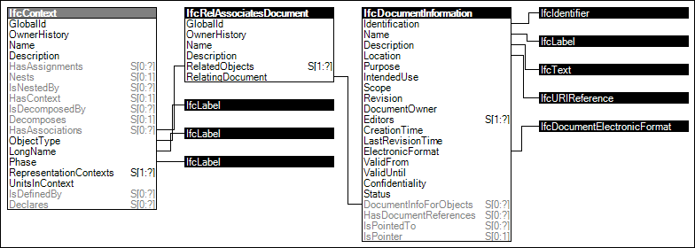

Link to this page
Link to this pageProjects may define external documents, which may be used to attach arbitrary information to objects contained within the same project or referencing projects.
Figure 6 illustrates an instance diagram.
 |
Figure 6 — Project Document Information |